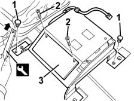
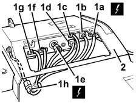

5580M30 navigation system control unit cd unit - r r
- Path
- Procedures > 55 ELECTRICAL EQUIPMENT > 5580 SPECIAL ACCESSORIES > 5580M om-board navigator > 5580M30 navigation system control unit cd unit - r r
- Kind
- repair procedure (removal / refitting; the operation number is the code)
- Applies to
- all engines; all production periods
- Interactive page
- https://sloeber94.github.io/elrnDB-fMltpl/en/#/2891999
Applies to: all engines; all production periods
 Removing
Removing
 Refitting
Refitting7045A10 l/h or r/h front seat (one) - r+r (left side)
1. Release the retaining buttons using the special tool.
 | Name | Country |
|---|---|---|
2 | Scraper blade | 1.878.077.000 |
2. Undo the bolts.
3. Remove the cover.

Applies to: all engines; all production periods
1. Move the unit slightly and disconnect the electrical connections (from 1a to 1h).
 | Name | Connector |
|---|---|---|
1a | Navigator control unit | M90A |
| Name | Connector |
|---|---|---|
1b | Navigator control unit | M90B |
| Name | Connector |
|---|---|---|
1c | Navigator control unit | M90C |
| Name | Connector |
|---|---|---|
1d | Navigator control unit | M90D |
| Name | Connector |
|---|---|---|
1e | Navigator control unit | M90E |
| Name | Connector |
|---|---|---|
1f | Navigator control unit | M90F |
| Name | Connector |
|---|---|---|
1g | Navigator control unit | M90G |
| Name | Connector |
|---|---|---|
1h | Navigator control unit | M90H |
2. Remove the unit.

Applies to: all engines; all production periods
1. If necessary, undo the bolts (1a) and remove the feeder (1b).
2. If necessary, undo the bolts (2a) and remove the CDlayer/control unit (2b).
3. Recover the earth cable.
Applies to: all engines; all production periods
Refitting
RemovingCheck that the CD player and control unit for the on-board navigator are not damaged.
If the CD player/control unit and earth lead is removed, place it in position and secure it using the bolts.
If the feeder is removed, place it in position and secure it using the bolts.
Position the unit on the vehicle floor and connect the electrical connections.
Position the cover and fix it using the bolts.
Engage the retaining buttons.
7045A10 l/h or r/h front seat (one) - r+r (left side)
Carry out the satellite navigator 'Menù Test' ( 5580M om-board navigator ).